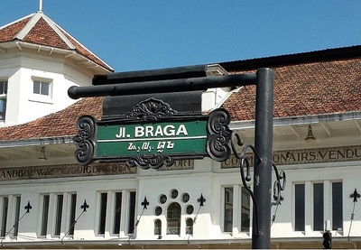
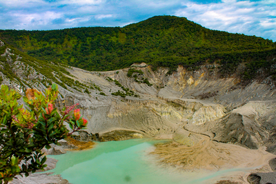
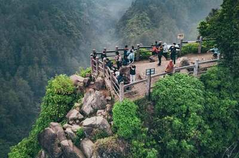
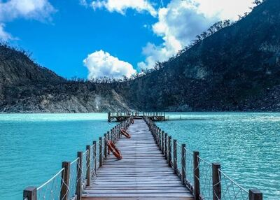

Braga

Gunung Tangkuban Perahu
Bandung offers a wide range of tourist attractions, with plenty of places to visit. For example, some popular destinations include "Braga," a historic street known for its old buildings and lively atmosphere; "Gunung Tangkuban Perahu," an active volcano where you can see amazing views of the crater; "Tebing Keraton," a beautiful cliff area that overlooks a lush valley; and "Kawah Putih," a unique volcanic crater lake with stunning turquoise water. These attractions highlight the city's diverse natural beauty, rich history, and vibrant culture, making Bandung an appealing destination for tourists.

Tebing Keraton
